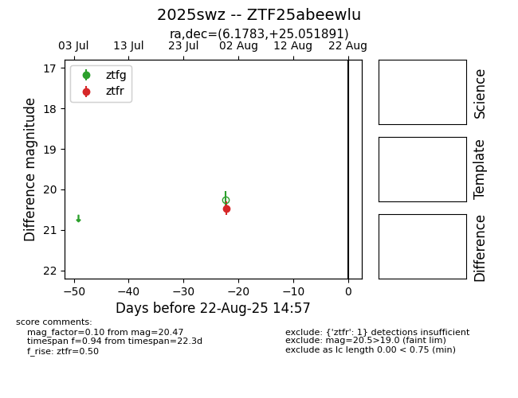

Target 2025swz at 2025-08-22 14:57, see:
FINK: fink-portal.org/ZTF25abeewlu
Lasair: lasair-ztf.lsst.ac.uk/objects/ZTF25abeewlu
ALeRCE: alerce.online/object/ZTF25abeewlu
TNS: wis-tns.org/object/2025swz
YSE: ziggy.ucolick.org/yse/transient_detail/2025swz
alt names
ZTF25abeewlu (ztf,alerce)
2025swz (tns,yse)
coordinates:
equatorial (ra, dec) = (6.1783,+25.05189)
galactic (l, b) = (115.3053,-37.42378)
photometry
last ztfr=20.47
1 ztfr detections
